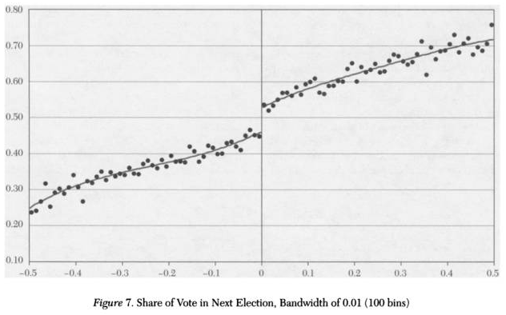
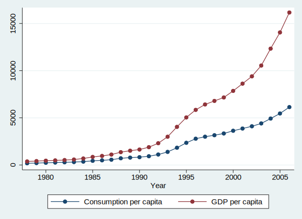

如果一根直线解决不了问题, 我们就用两根直线。

很多时候, 经济规律会随着时间的推移在某个时间点发生变化, 这个时间点就叫做断点, 就如上图所示的样子。为了检验断点是否存在, 我们可以使用下面的方法:
(如上图所示)
- 先做(-0.5, 0.5)之间的样本的回归
- 再做(-0.5, 0)之间的样本的回归
- 最后做(0, 0.5)之间的样本的回归
利用三个回归的残差平方和根据公式计算F统计量, 利用F分布来给出显著性检验, 如果F显著, 则拒绝原假设(不存在断点), 否则认为不存在断点。
F(K, n-2K):
$$
F = { {(ssr - ssr1 - ssr2)/K} \over {(ssr1 + ssr2)/(n - 2K)} }
$$
下面以陈强教授书中的案例演示一下:
数据是中国1978-2006年人均消费和人均GDP数据, 下面加载数据, 然后看一下数据的基本情况:
1 | use data/consumption_china.dta, clear |
1 | sum |
Variable | Obs Mean Std. Dev. Min Max -------------+--------------------------------------------------------- year | 29 1992 8.514693 1978 2006 c | 29 2005.897 1828.339 184 6138 y | 29 4569.31 4571.836 381 16165
数据中变量的解释:
- year: 年份
- c: 居民人均消费
- y: 居民人均GDP
绘制两个变量的时间趋势图, 我们的目的是想要检测一下在1992年是否存在经济的变动点:
1 | graph twoway connect c y year |

第一步, 所有样本构建回归方程
使用人均GDP预测人均消费:
1 | reg c y |
Source | SS df MS Number of obs = 29 -------------+---------------------------------- F(1, 27) = 2441.51 Model | 92575330.6 1 92575330.6 Prob > F = 0.0000 Residual | 1023766.1 27 37917.2631 R-squared = 0.9891 -------------+---------------------------------- Adj R-squared = 0.9887 Total | 93599096.7 28 3342824.88 Root MSE = 194.72 ------------------------------------------------------------------------------ c | Coef. Std. Err. t P>|t| [95% Conf. Interval] -------------+---------------------------------------------------------------- y | .3977205 .0080491 49.41 0.000 .3812051 .414236 _cons | 188.588 51.57697 3.66 0.001 82.76078 294.4152 ------------------------------------------------------------------------------
计算残差平方和:
1 | scalar ssr=e(rss) |
1 | dis ssr |
1023766.1
第二步, 构建1992年之前的样本的回归模型
1 | reg c y if year < 1992 |
Source | SS df MS Number of obs = 14 -------------+---------------------------------- F(1, 12) = 4381.66 Model | 829144.945 1 829144.945 Prob > F = 0.0000 Residual | 2270.7688 12 189.230733 R-squared = 0.9973 -------------+---------------------------------- Adj R-squared = 0.9970 Total | 831415.714 13 63955.0549 Root MSE = 13.756 ------------------------------------------------------------------------------ c | Coef. Std. Err. t P>|t| [95% Conf. Interval] -------------+---------------------------------------------------------------- y | .4995544 .0075468 66.19 0.000 .4831113 .5159975 _cons | 12.98254 7.87353 1.65 0.125 -4.172404 30.13749 ------------------------------------------------------------------------------
计算该方程的残差平方和:
1 | scalar ssr1 = e(rss) |
1 | dis ssr1 |
2270.7688
第三步, 构建1992年之后的样本的回归模型
1 | reg c y if year >= 1992 |
Source | SS df MS Number of obs = 15 -------------+---------------------------------- F(1, 13) = 764.58 Model | 28749474.3 1 28749474.3 Prob > F = 0.0000 Residual | 488822.141 13 37601.7031 R-squared = 0.9833 -------------+---------------------------------- Adj R-squared = 0.9820 Total | 29238296.4 14 2088449.74 Root MSE = 193.91 ------------------------------------------------------------------------------ c | Coef. Std. Err. t P>|t| [95% Conf. Interval] -------------+---------------------------------------------------------------- y | .359886 .0130153 27.65 0.000 .3317682 .3880038 _cons | 566.4531 115.2172 4.92 0.000 317.5415 815.3646 ------------------------------------------------------------------------------
计算该方程的残差平方和:
1 | scalar ssr2 = e(rss) |
1 | dis ssr2 |
488822.14
第四步, 计算F统计量
根据上面的公式, 我们可以计算F统计量:
1 | scalar F = ((ssr-ssr1-ssr2)/2)/((ssr1+ssr2) / 25) |
1 | dis F |
13.558361
得到F统计量, 我们查找F分布表就能知道假设是否成立了。
另外一种方法
上面的方法有些繁琐, 我们还可以使用构建虚拟变量的方法, 思路是这样的:
- 构建虚拟变量d, 标志数据是否来自1992年之后, 是则取1, 否则取0
- 计算d和自变量y的交互项: yd
- 构建回归方程, reg c y d yd
下面我们来快速做一下:
生成虚拟变量d:
1 | gen d = (year > 1991) |
生成交互项变量:
1 | gen yd = y*d |
回归分析:
1 | reg c y d yd |
Source | SS df MS Number of obs = 29 -------------+---------------------------------- F(3, 25) = 1579.95 Model | 93108003.8 3 31036001.3 Prob > F = 0.0000 Residual | 491092.91 25 19643.7164 R-squared = 0.9948 -------------+---------------------------------- Adj R-squared = 0.9941 Total | 93599096.7 28 3342824.88 Root MSE = 140.16 ------------------------------------------------------------------------------ c | Coef. Std. Err. t P>|t| [95% Conf. Interval] -------------+---------------------------------------------------------------- y | .4995544 .0768917 6.50 0.000 .341193 .6579158 d | 553.4705 115.6304 4.79 0.000 315.3252 791.6159 yd | -.1396684 .077465 -1.80 0.083 -.2992106 .0198738 _cons | 12.98254 80.22052 0.16 0.873 -152.2347 178.1998 ------------------------------------------------------------------------------
最后计算d与yd的联合显著性:
1 | test d yd |
( 1) d = 0 ( 2) yd = 0 F( 2, 25) = 13.56 Prob > F = 0.0001
上面计算得到的F统计量和第一种方法计算得到的F是相同的。
如果你怀疑在1992年前后的样本扰动项是异方差的, 那么我们可以进行异方差稳健的回归分析:
1 | reg c y d yd, r |
Linear regression Number of obs = 29 F(3, 25) = 2290.56 Prob > F = 0.0000 R-squared = 0.9948 Root MSE = 140.16 ------------------------------------------------------------------------------ | Robust c | Coef. Std. Err. t P>|t| [95% Conf. Interval] -------------+---------------------------------------------------------------- y | .4995544 .0104615 47.75 0.000 .4780085 .5211003 d | 553.4705 138.6738 3.99 0.001 267.8665 839.0746 yd | -.1396684 .0186167 -7.50 0.000 -.1780103 -.1013265 _cons | 12.98254 8.966059 1.45 0.160 -5.483399 31.44849 ------------------------------------------------------------------------------
然后进行d和yd的联合显著性检验:
1 | test d yd |
( 1) d = 0 ( 2) yd = 0 F( 2, 25) = 34.01 Prob > F = 0.0000
虽然F值不同, 但是最终的结论是一样的。
参考文献
陈强[高级计量经济学]
注意
本文由jupyter notebook转换而来, 您可以在这里下载notebook
有问题可以直接在下方留言
或者给我发邮件675495787[at]qq.com
请记住我的网址: mlln.cn 或者 jupyter.cn